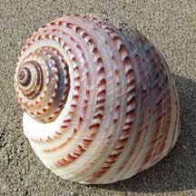
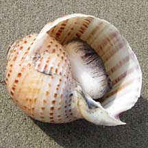
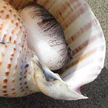
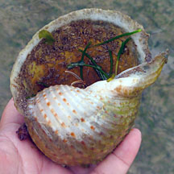

|
|
| shelled snails text index | photo index |
| Phylum Mollusca > Class Gastropoda |
| Tun
shell snails Family Tonnidae updated Sep 2020 Where seen? This snail with a large, thin spherical shell is rarely seen. They are usually found in sandy bottoms in deeper water and thus living snails are rarely seen on the intertidal. Elsewhere, they are found in sandy areas especially in seagrass meadows. Features: 9-10cm. The shell is thin but strong, nearly spherical with a short spiral and very large shell opening. Usually with spiralling ridges on the surface. Adult snails lack an operculum. The Banded tun (Tonna sulcosa) is about 10cm with a rather thick shell that has flat spiral ribs. It is creamy white with 3-4 broad spiralling brown bands. It is found on fine sand and muddy bottoms. The Spotted tun (Tonna dolium) is about 13cm and found on find sand and muddy bottoms. |
 Possibly the Spotted tun. Changi, Jan 10 |
 Underside. |
 |
| What do they eat? Mainly echinoderms
such as sea cucumbers and crustaceans. The snail first paralyses the
prey with a salivary secretion containing sulphuric acid before swallowing
it whole! The animal has a large foot and can crawl and burrow rapidly. Baby tuns: The egg mass is a wide gelatinous ribbon containing many small, transparent eggs. The planktonic larvae take a very long time to develop, thus some species are widely dispersed by ocean currents. Human uses: It is sometimes collected for food by coastal dwellers and the shell used as decorative items. |
| Tun shell snails on Singapore shores |
On wildsingapore
flickr
|
| Other sightings on Singapore shores |
 Shell occupied by a hemit crab. Cyrene, Aug 11 |
| Family
Tonnidae recorded for Singapore from Tan Siong Kiat and Henrietta P. M. Woo, 2010 Preliminary Checklist of The Molluscs of Singapore.
|
Links
References
|